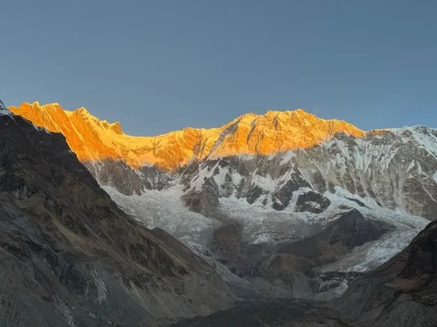
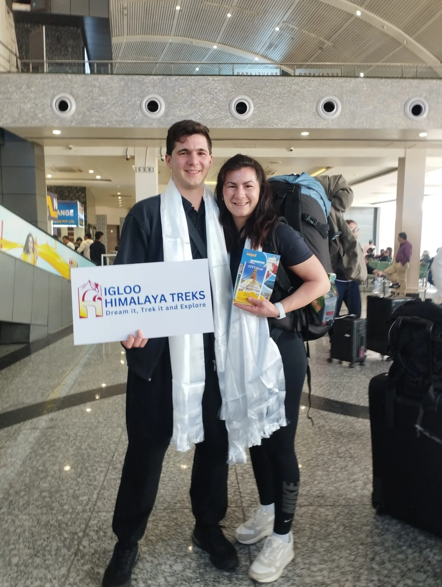
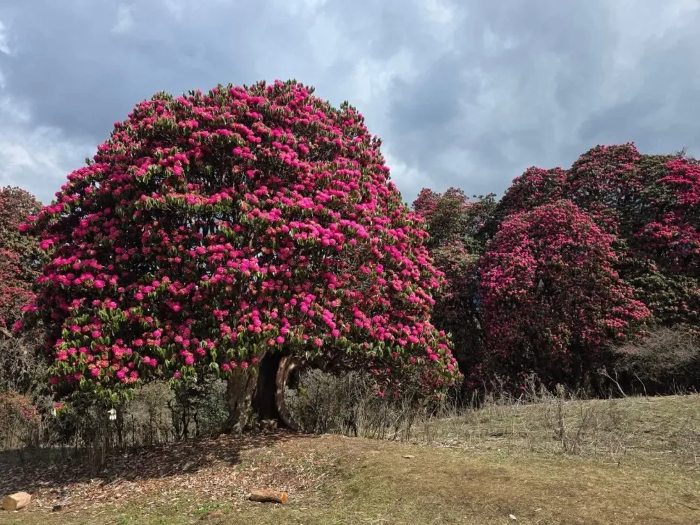
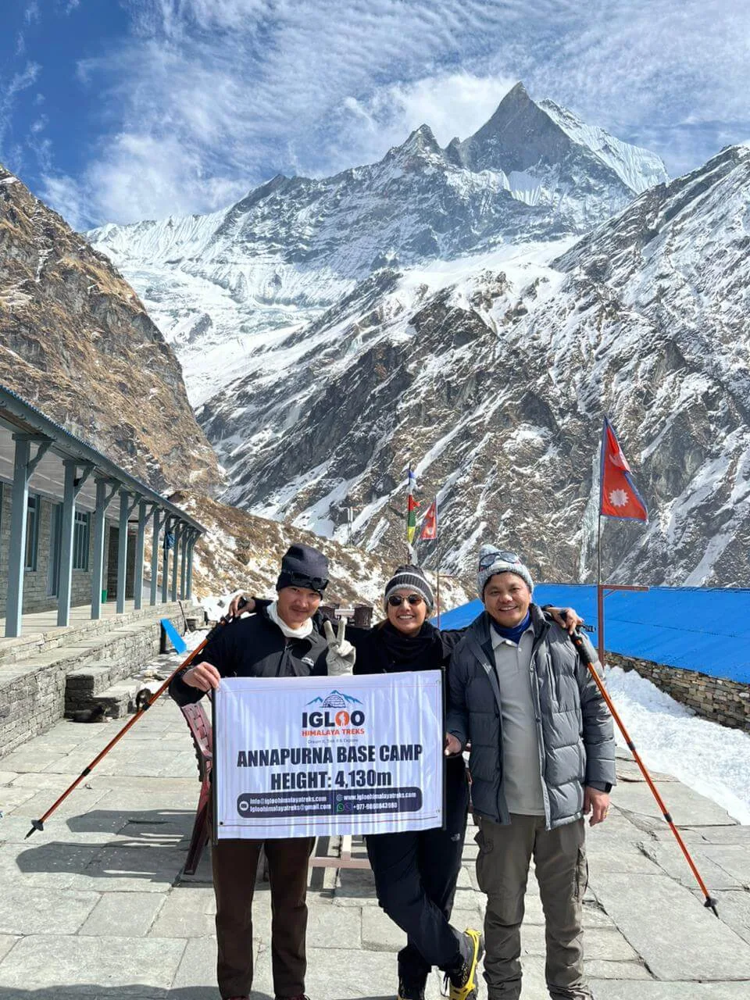

1. The Classic 13-Day Annapurna Sanctuary & Poon Hill Grand Circuit Overview
While rapid express itineraries push straight up the Modi Khola canyon in 7 to 9 days, the 13-day grand circuit remains the undisputed gold standard for hikers who want the complete Himalayan story. Rather than an abrupt out-and-back trek, this route forms an elegant lollipop loop through the southern foothills before entering the high mountain sanctuary.
The journey begins with an ascent through ancient rhododendron and oak cloud forests to Ghorepani and Poon Hill, providing early acclimatization at 3,210 meters and jaw-dropping sunrise views of Dhaulagiri I (8,167 m), Nilgiri, and Annapurna South. From there, the trail traverses across ridge crests through Tadapani and Ghandruk, joining the Modi Khola river canyon at Chhomrong to make the final ascent into the sacred Annapurna Sanctuary.

Expedition Highlights:
- Two World-Class Viewpoints: Witness dawn from both Poon Hill (3,210 m) and Annapurna Base Camp (4,130 m).
- Superior Acclimatization: Spending 4 days hiking between 2,000 m and 3,200 m prior to entering the high gorge virtually eliminates altitude sickness risks.
- Cultural Riches: Explore traditional slate-roofed Gurung and Magar settlements in Ulleri, Ghorepani, and Ghandruk.
- Post-Trek Geothermal Healing: Soak in the natural hot springs of Jhinu Danda beside the roaring Modi Khola.
2. Day-by-Day Master Itinerary: Kathmandu to Poon Hill, ABC & Pokhara
Below is the complete 13-day door-to-door itinerary from Kathmandu, structured for optimal walking pace, photography light, and adequate recovery:
| Day | Route & Daily Destination | Distance | Hiking Hours | Altitude (Start → End) |
|---|---|---|---|---|
| Day 01 | Drive / Fly from Kathmandu to Pokhara; lakeside leisure | Transfer | 25 min flight / 6 hr drive | 1,400 m → 820 m |
| Day 02 | Drive Pokhara to Nayapul / Tikhedhunga; Trek to Ulleri | 9.2 km | 4.5 – 5.5 hrs | 820 m → 1,540 m → 2,070 m |
| Day 03 | Ulleri to Ghorepani via Banthanti rhododendron forest | 11.5 km | 5.0 – 6.0 hrs | 2,070 m → 2,860 m |
| Day 04 | Poon Hill sunrise (3,210 m); Trek to Tadapani via Deurali Pass | 12.4 km | 6.0 – 7.0 hrs | 2,860 m → 3,210 m → 2,630 m |
| Day 05 | Tadapani to Chhomrong via Chuile & Kimrong Khola | 10.6 km | 5.0 – 6.0 hrs | 2,630 m → 2,170 m |
| Day 06 | Chhomrong to Dovan via Sinuwa & Bamboo | 10.8 km | 5.5 – 6.5 hrs | 2,170 m → 1,900 m → 2,600 m |
| Day 07 | Dovan to Deurali via Himalayan Hotel & Hinku Cave | 7.8 km | 4.5 – 5.5 hrs | 2,600 m → 3,200 m |
| Day 08 | Deurali to Annapurna Base Camp (ABC) via MBC | 8.5 km | 5.0 – 6.0 hrs | 3,200 m → 3,700 m → 4,130 m |
| Day 09 | Sunrise over Annapurna I; Trek descend to Bamboo | 15.2 km | 6.0 – 7.0 hrs | 4,130 m → 2,310 m |
| Day 10 | Bamboo to Jhinu Danda; soak in natural hot springs | 9.2 km | 4.5 – 5.5 hrs | 2,310 m → 1,780 m |
| Day 11 | Jhinu Danda to Siwai; drive private 4WD to Pokhara | 4.5 km | 2.0 – 2.5 hrs (Trek) + 2.5 hrs (Drive) | 1,780 m → 1,400 m → 820 m |
| Day 12 | Full relaxation day in Pokhara (Boating on Phewa Lake, massages) | Rest Day | — | 820 m |
| Day 13 | Fly / drive back from Pokhara to Kathmandu | Transfer | 25 min flight / 6 hr drive | 820 m → 1,400 m |
| Total 13-Day Expedition: | ~99.7 km | 45 – 54 hrs | Cumulative Ascent: +5,800 m | |

3. Elevation Profile & Acclimatization Strategy: From Ulleri Steps to 4,130 m ABC
The genius of the 13-day itinerary lies in its physiological stair-step acclimatization. On shorter 7-day direct routes, you must ascend from 1,400 m to 4,130 m in four consecutive days. On this 13-day itinerary, your body undergoes an early "climb high, sleep low" conditioning cycle:
| Expedition Stage | Sleeping Altitude | Daily Elevation Gain / Loss | Effective Oxygen vs Sea Level | Physiological Acclimatization Status |
|---|---|---|---|---|
| Stage 1: Ulleri | 2,070 m (6,791 ft) | +530 m climb from Tikhedhunga | 78% | Initial muscular load; mild breathing elevation. |
| Stage 2: Ghorepani | 2,860 m (9,383 ft) | +790 m through rhododendron forests | 72% | Red blood cell stimulation commences; cool night air. |
| Stage 3: Poon Hill & Tadapani | 2,630 m (8,628 ft) | +350 m to Poon Hill (3,210 m), sleep lower (-580 m) | 69% (Poon Hill summit) | Classic "climb high, sleep low" physiological adaptation. |
| Stage 4: Chhomrong | 2,170 m (7,119 ft) | -460 m descent into river basin | 77% | Complete systemic recovery before entering high canyon. |
| Stage 5: Deurali | 3,200 m (10,498 ft) | +1,030 m climb over 2 days | 69% | Sub-alpine canyon staging; vital rest before sanctuary. |
| Stage 6: Annapurna Base Camp | 4,130 m (13,550 ft) | +930 m net gain from Deurali via MBC | 61% | High-altitude sanctuary; well adapted due to prior days. |
By the time you reach the higher elevations of Deurali (3,200 m) on Day 7 and Annapurna Base Camp (4,130 m) on Day 8, your body has fully adapted to thinner air, resulting in virtually zero incidence of acute mountain sickness (AMS).
4. The Dawn at Poon Hill (3,210 m): Panoramic Sunrise over Dhaulagiri & Annapurna Ranges
At 4:45 AM on Day 4, trekkers leave Ghorepani with headlamps to climb the stone switchbacks up to the summit observation tower of Poon Hill (3,210 m / 10,531 ft).
As dawn breaks across the horizon, you witness one of the most celebrated panoramas on planet earth. The morning sun illuminates two distinct 8,000-meter giants simultaneously:
- Dhaulagiri I (8,167 m / 26,795 ft): The 7th highest mountain in the world, glowing blazing white across the deep Kali Gandaki gorge.
- Annapurna I (8,091 m / 26,545 ft): Peeking out behind the imposing granite fortress of Annapurna South (7,219 m).
- Machapuchare (6,993 m): Revealing its distinctive "Fishtail" twin summits.
- Dhaulagiri II, III, IV, Tukche Peak, Nilgiri, Hiunchuli, and Lamjung Himal: Forming an unbroken 180-degree wall of ice and snow.

5. The Legend of Ulleri: Tackling the 3,300 Stone Steps from Tikhedhunga
On Day 2 of the 13-day trek, you face one of the most famous physical rites of passage in the Himalayas: The 3,300 Stone Steps of Ulleri.
Crossing the suspension bridge over the Bhurungdi Khola river at Tikhedhunga (1,540 m), the trail immediately points skyward. Hand-carved granite stones ascend the sheer mountainside without a break, gaining over 530 vertical meters in just 2.2 kilometers to reach the village of Ulleri (2,070 m).
Never rush the Ulleri staircase. Take small, measured steps where your entire foot rests flat on each stone rather than balancing on the balls of your feet. Maintain a rhythmic breathing cadence (inhale for two steps, exhale for two steps) and utilize dual trekking poles to push 20% of your body weight through your upper arms.
6. Through the Enchanted Forest: Giant Rhododendron & Mossy Gorges from Ghorepani to Tadapani
Day 4’s trail from Ghorepani to Tadapani traverses through one of the largest continuous rhododendron forests in the entire Himalayan chain. During the spring months of March and April, the canopy explodes with blossoms in vibrant hues of deep crimson, magenta, baby pink, and pure white.
Climbing past Deurali Pass (3,100 m), the trail drops into a lush, moss-draped cloud forest where mountain streams cascade through narrow limestone gorges. Trekkers frequently spot grey langur monkeys swinging through the bamboo and hear the distinctive calls of the Himalayan Monal (Danphe), Nepal’s colorful national bird.

7. Cultural Immersion in Ghandruk & Chhomrong: Gurung Traditions, Museums & Hospitality
The 13-day route immerses you deeply in the homeland of the legendary Gurung people, renowned worldwide for their bravery as British Gurkha soldiers. Villages like Ghandruk and Chhomrong are architectural masterpieces of dry-stone masonry, flagstone streets, and carved wooden window frames.
Trekkers can visit the Old Gurung Museum in Ghandruk to see traditional woolen clothing, weapons, shamanic ritual drums, and historical artifacts from the 19th century. In Chhomrong, enjoy fresh mountain bakeries serving German apple strudel and chocolate croissants alongside traditional butter tea.
8. Entering the Gates of the Sanctuary: Modi Khola Canyon, Hinku Cave & Deurali
From Chhomrong onward, the trail enters the narrow Modi Khola river canyon—the sole geographic gateway into the Annapurna Sanctuary. As you climb from Dovan (2,600 m) to Deurali (3,200 m), the landscape transforms from dense bamboo jungle into sheer, towering vertical rock walls.
At Hinku Cave (3,100 m), you pass beneath an immense overhanging granite slab where early mountaineering porters on the 1970 Chris Bonington Annapurna South Face expedition camped for shelter. Beyond Hinku Cave, the valley narrows to a bottleneck before widening into the sanctuary gates.

9. Standing at Twin Base Camps: Machapuchare (3,700 m) & Annapurna Base Camp (4,130 m)
Day 8 features the unique thrill of visiting two world-class base camps in a single day. At Machapuchare Base Camp (MBC, 3,700 m), you stand beneath the sacred pyramid of the Fishtail peak. Because the mountain has never been climbed to its summit out of religious reverence for Lord Shiva, MBC serves as an acclimatization waystation rather than an active climbing camp.
From MBC, a gentle 2-hour walk across rolling alpine tundra and glacial lateral moraines leads you into the heart of Annapurna Base Camp (ABC, 4,130 m). The lodges at ABC are surrounded on all sides by towering vertical walls of rock and tumbling ice.
10. Golden Hour in the Sanctuary: Annapurna I South Face & Hiunchuli Panorama
The dawn of Day 9 is the emotional peak of the entire 13-day expedition. As first light strikes the 8,091-meter summit of Annapurna I, the massive 4,000-meter vertical wall turns blazing orange, reflecting down onto the snowfields of the sanctuary basin.
The 360-degree amphitheater encompasses Annapurna I (8,091 m), Annapurna South (7,219 m), Hiunchuli (6,441 m), Machapuchare (6,993 m), Gangapurna (7,455 m), and Tent Peak (5,663 m). Trekkers gather on the moraine ridge with warm cups of tea, celebrating the culmination of over a week of mountain effort.

11. Post-Trek Thermal Healing: Soaking in Jhinu Danda Geothermal Hot Springs
After dropping over 2,300 vertical meters from ABC down through the bamboo forests, Day 10 delivers pure physical luxury at the natural hot springs of Jhinu Danda (1,780 m).
Located on the banks of the glacial Modi Khola, three stone pools capture natural geothermal water bubbling at 38°C to 42°C (100°F to 108°F). Soaking in the warm, mineral-rich thermal water while listening to the roar of the glacier river washes away ten days of trail fatigue, soothing knee joints and tired leg muscles.
13. 2027 Cost Breakdown: ACAP, TIMS, Transport, Guide/Porter Fees & Incidentals
Here is an accurate, transparent cost estimate for the 13-day Annapurna Base Camp & Poon Hill trek in 2027:
| Expense Category | Estimated Cost (USD) | Estimated Cost (NPR) | Details |
|---|---|---|---|
| ACAP Conservation Area Permit | ~$23 USD | NPR 3,000 | Mandatory national park entry permit |
| TIMS Card (Trekkers' Information) | ~$15 USD | NPR 2,000 | Mandatory government safety registration |
| Poon Hill Tower Entry Fee | ~$1.20 USD | NPR 150 | Payable at the Poon Hill gate |
| Licensed Guide (11 Days on Trail) | $350 – $420 USD | $32 – $38 / day | Includes guide wages, meals, lodging, insurance |
| Dedicated Porter (11 Days on Trail) | $230 – $280 USD | $21 – $26 / day | Carries 20 kg (shared between 2 trekkers) |
| Ground Transportation (Jeep & Bus) | $90 – $140 USD | NPR 12,000 – 18,000 | Pokhara ↔ Nayapul and Siwai ↔ Pokhara |
| Teahouse Food & Lodging (11 Nights) | $300 – $380 USD | $28 – $35 / day | 3 hot meals daily, tea, and room accommodations |
| Incidentals (Showers, Wi-Fi, Charging) | $45 – $70 USD | NPR 6,000 – 9,000 | Hot showers, device battery charging, hot springs |
| Total Standard Guided Package Cost: | $890 – $1,350 USD per person (Based on 2 persons) | ||
14. Frequently Asked Questions: Annapurna Base Camp Trek 13 Days
Get immediate, expert answers to the most common questions regarding planning, fitness, and route choices for the 13-day Annapurna Base Camp trek.

Ready to Experience the Himalayas?
Whether you are preparing for high-altitude trekking, cultural circuits, or alpine summit expeditions, start planning a bespoke journey tailored to your fitness, travel season, and style.